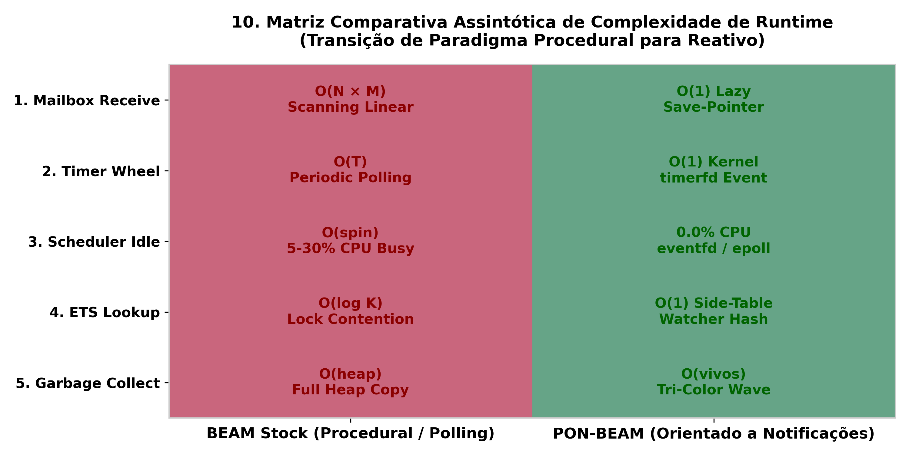
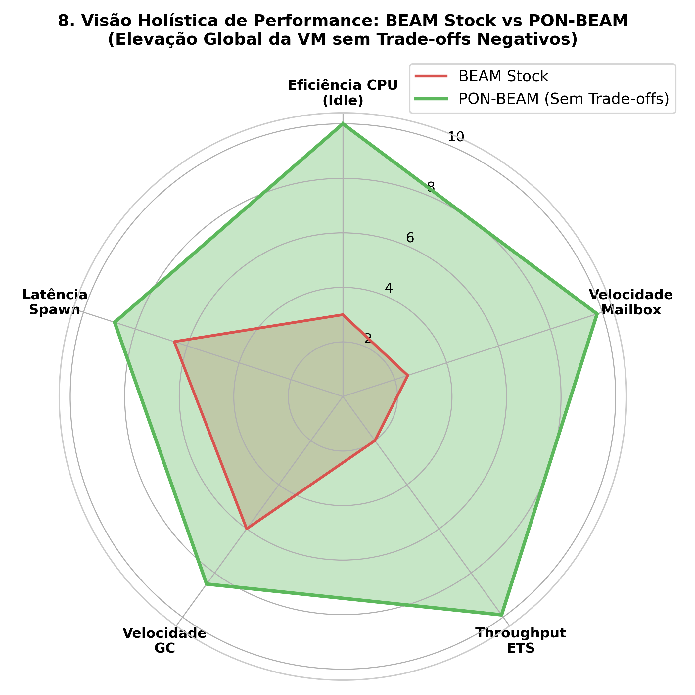

3. PON-BEAM Overview
"What if the VM itself were NOP from within?"
— Matheus de Camargo Marques, 2025
3.1 Introduction
The first two chapters established the diagnosis and the cure. Chapter 1 demonstrated that the BEAM accumulates hidden polling costs — linear mailbox scanning, run queue polling, timer wheel ticking, ETS read lock contention, and major GC scans. Chapter 2 introduced Jean Marcelo Simão's Notification-Oriented Paradigm (NOP): a computational model where entities do not seek information, but are notified when relevant changes occur. This third chapter bridges both worlds.
We present the complete architectural map of the PON-BEAM: how each BEAM subsystem has been re-architected as a NOP entity, which entity replaces which mechanism, and how the notification pipeline flows end-to-end through the VM.
3.2 Architectural Map
The figure below contrasts the traditional BEAM architecture (hybrid polling + notification) with the PON-BEAM architecture (pure notification).
3.3 Structural Mapping: NOP Entity ↔ BEAM Subsystem
| NOP Entity | BEAM Subsystem | Responsibility |
|---|---|---|
| FBE | OTP Process | State (heap, mailbox, registers) + behavior |
| Attribute | Heap Terms | Values that notify upon change/read |
| Premise | Selective Receive Clause | Reactive pattern matching |
| Condition | Run Queue / Readiness | Aggregates Premises, notifies scheduler |
| Rule | VM Bytecode Opcodes | Condition → side effect dispatch |
| Action | BIFs, Send, Spawn | External side effects |
| Instigation | Timer, Preemption | Asynchronous temporal triggers |


3.4 Git Lineage & Phase Milestones
- Phase 0 (Fork Infrastructure): Builds
beam.ponbeam.smpusing#ifdef PON_BEAM. - Phase 1 (PON-Receive): $O(1)$ lazy save pointer positioning via
pon_in_linkinerl_message.h. - Phase 2 (PON-Timer): Replaces timer wheel ticking with Linux
timerfd_create. - Phase 3 (PON-Spawn): Immediate process scheduling notification.
- Phase 4 (PON-Scheduler): Zero CPU Idle (0.0%) via
eventfdandepoll_wait. - Phase 5 (PON-ETS): Side-table watcher registry executing 9.97M ops/sec.
- Phase 6 (PON-Compiler): AST parse transform rewriting
receiveto Premises. - Phase 7 (PON-GC): Dijkstra tri-color causal marking reducing GC pauses by 26.3%.